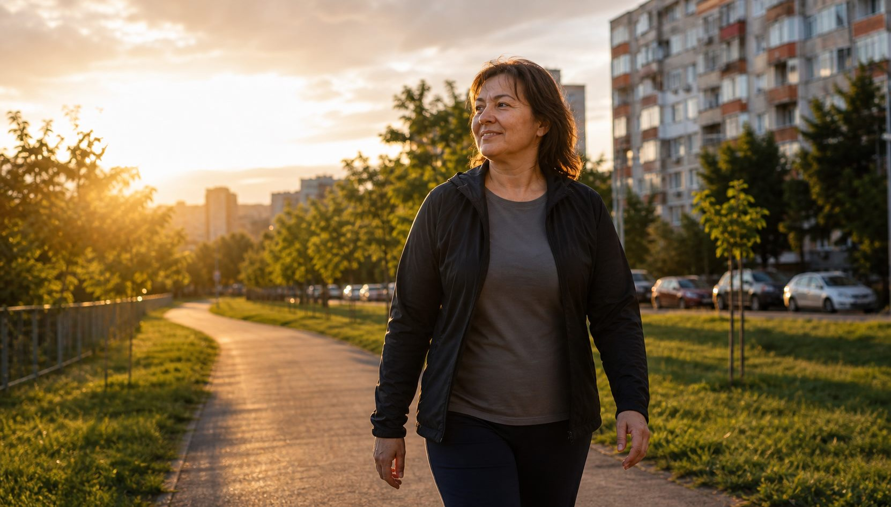
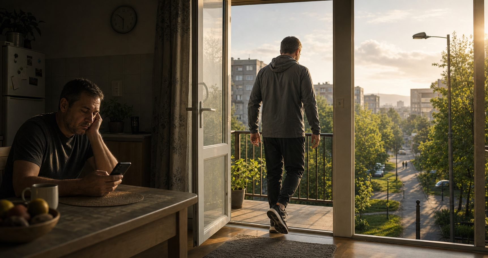
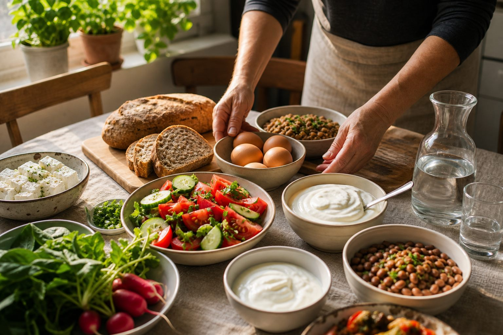
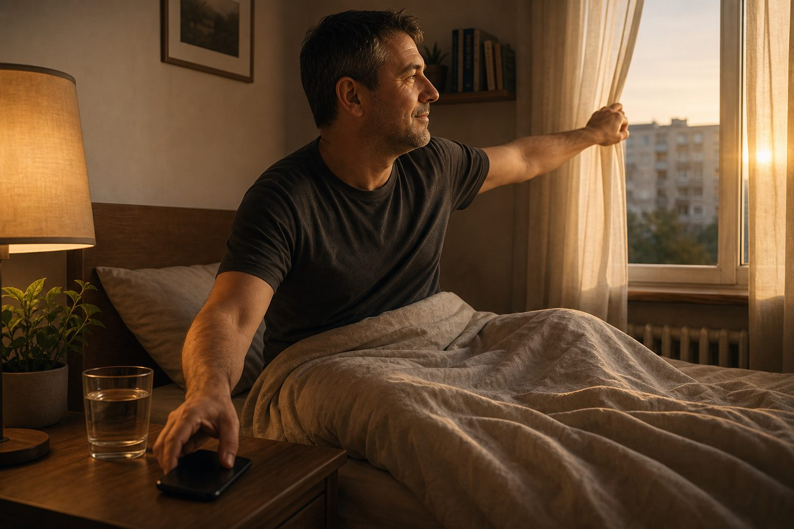

ДВИЖЕНИЕ
Излез преди мозъкът да измисли оправдание
10 минути навън са достатъчни, за да прекъснеш инерцията.
Ако си уморен, заседнал, качил килограми или все отлагаш — не ти трябва перфектен план. Трябва първата малка стъпка, която можеш да повториш утре.

Избери го мислено. Отговорът не е мотивация, а по-малка стъпка.
Тогава не търсиш час. Търсиш 10 минути.
Затова започваш с ходене, не с наказание.
Яйца, кисело мляко, овес, боб и ходене не са лукс.
Понеделник е капан. Днес е по-силен избор.
Не чети всичко. Излез днес за 10 минути ходене и спри една автоматична глупост: цигари, сладко, алкохол или безкрайно скролване.
Ще видиш точно колко движение ти трябва, без мотивационни клишета и без „от понеделник“.
Три малки смени, които правят следващата страница смислена

10 минути навън са достатъчни, за да прекъснеш инерцията.

Протеин, истинска храна и по-малко автоматична захар.

Сънят е мястото, където тялото реално се ремонтира.
Реалните промени — не само на кантара
Опитай една малка промяна за седмица и следи как се получава. Липсата на бърз ефект не означава липса на полза. Не са нужни забрани на цели храни.
Редовните навици могат да помогнат за ежедневната енергия. Следи собствената си промяна, без обещан процент.
Малка стъпка, свързана с точен час и място, е по-лесна за повторение.
Почивките от седене, движението и достатъчният сън подкрепят работоспособността.
Разходка с приятел е едновременно движение и време с човек.
Напредъкът в конкретно действие може да ти даде увереност и преди промяна във външния вид.
Движението може да подобри съня. Постоянните проблеми със съня имат различни причини.
Физическата активност може да намали симптоми на тревожност и депресия; не е гарантирано лечение за всеки.
Движението и балансираното хранене подпомагат профилактиката. Показателите се проследяват, не се обещават.
Планирането и по-малкото разхищение могат да намалят разходите. Сравнявай реалната си кошница.
Избери 10 минути ходене, ако ги понасяш, или едно хранене с повече разнообразие.
Колко дни успя? Кое ти попречи? Направи плана по-лесен там, където се къса.
Проследи ходене, сила, сън и талия при еднакви условия. Няма задължителни килограми за сваляне.
Увеличи натоварването постепенно, ако сегашното е поносимо. При нужда обсъди изследвания и симптоми със специалист.
Целта е режим, който се побира в живота ти. Пропуснат ден не занулява напредъка.
Гените влияят на предразположението, а средата и навиците влияят на това как живееш с него. Няма универсално съотношение „70% начин на живот, 30% генетика“. Работи върху нещата, които можеш да промениш.
Силовите упражнения помагат да запазваш сила и мускули. Започни с поносима трудност и постепенно напредвай. Това не е хормонална терапия и не гарантира определен ръст на тестостерона.
Движението, достатъчното хранене и възстановяването са полезна основа и за жените, и за мъжете. Няма универсален режим за „хормонален баланс“. Постоянни симптоми като силна умора, нарушения в цикъла или промени в либидото имат нужда от индивидуална оценка.
„Не тренираш за да изглеждаш. Тренираш за да живееш."
Практични ориентири за възрастни, не обещания за резултат
Бавно се е случило. Бавно се обръща.
Не ти трябва диагноза, за да видиш, че функцията ти вече изостава.
Талия, сила, баланс, крачки, задух, сън. Това вече стана отделен инструмент, защото е по-полезно от още една таблица с BMI.
Там ще видиш тестовете, резултата и какво да правиш първо, ако вече има проблемни сигнали.
Провери се сега →Възрастта дава контекст, но не поставя диагноза и не предсказва личния ти риск.
4 въпроса за навици · ориентир за следваща стъпка, не оценка на здравето
Всяко едно — мит
Навиците могат да се променят с повторение и по-лесна среда. Не е нужно да чакаш да се почувстваш друг човек: избери малка стъпка, която можеш да изпълниш днес и утре.
Изборът е труден, но основни продукти има: овес, яйца, бобови, кисело мляко, плодове и зеленчуци. Гледай състава, количеството и цялостния си режим. Замразеното и консервираното също могат да са удобен избор.
Бобови, овес, яйца, сезонни и замразени зеленчуци могат да помогнат за бюджета. Сравнявай пълноценно хранене с пълноценно хранене, еднакви количества и реални цени. Няма една дневна сума, която осигурява достатъчно храна за всеки.
Започни с 10 минути, вързани към нещо, което така или иначе правиш: ходене след обяд, приготвяне на закуска вечерта или кратка пауза от седене. Времето за подготовка също се брои; избери лесна стъпка.
Понеделник идва всяка седмица от години. Следващото хранене е по-добрият старт от следващия понеделник. Не е нужна перфектна диета — нужна е следваща по-добра хапка.
Едно хранене не определя здравето ти. По-важни са обичайният режим, количеството, разнообразието и това какво можеш да поддържаш. Няма нужда да „компенсираш“ един бургер с глад или наказателна тренировка.
Наследствеността влияе на теглото и здравето, но не обезсмисля движението и доброто хранене. Сравнявай напредъка със собствената си изходна точка, а не с човек с различни условия.
Нормално е да търсиш отдушник след тежък ден. Подготви си лесна вечеря, кратка разходка или разговор с близък. Не е нужно храната да е награда, а тренировката — наказание.
Неуспешен опит не доказва, че промяната е невъзможна. Виж какво те е спряло: глад, прекалено сложен план, неподходящ график или липса на подкрепа. Следващият опит трябва да решава конкретната пречка.
Децата копират. Ако ти ядеш пица всяка вечер — те ще ядат пица. Ако те видят да правиш лицеви — те ще искат да правят. Примерът е най-силното възпитание.
Лицеви опори и клякания можеш да правиш почти навсякъде и по всяко време — в почивка на работа, по време на разходка, на балкона, в хола. Нямаш нужда от фитнес, уреди или специални условия. Тялото ти е единственото оборудване, което ти трябва.
Болката не е автоматично оправдание, но не е и тест за характер. Избирай поносими движения и адаптирай натоварването според състоянието. При нова травма, изтръпване, слабост или нарастваща болка потърси оценка. Не всяка болка в гърба е от слаби мускули.
По-лесно е да изграждаш устойчиви навици постепенно, отколкото да чакаш конкретен проблем. Започни с нещо малко сега; няма нужда от обещания за заболявания, за да има смисъл.
Възрастта не премахва ползата от движението. Започни според сегашните си възможности. За по-възрастните хора сила и баланс са особено полезни за ежедневната самостоятелност. Подобрението не изисква маратон.
Младостта не е гаранция за здраве, но не означава и че вече имаш заболяване. Използвай я, за да изградиш сън, движение и хранене, които ти помагат и след години.
Омлет с домати. Леща с подправки. Печени картофи с кисело мляко. Риба със зеленчуци. Вкусът зависи от приготвянето. И полезните храни имат калории — порцията също има значение.
Яйца на тиган — 4 минути. Овесена каша — 3 минути. Авокадо с домат — 2 минути. Риба тон от консерва със зеленчуци — 5 минути. Гръцко кисело мляко с ядки — 1 минута.
Сложното готвене е опция, не изискване. Здравословното може да е по-бързо от поръчването на доставка. Единственото нещо, което се готви бавно, е оправданието.
Наслаждението и грижата за себе си могат да вървят заедно. Целта е повече възможности в ежедневието, без да превръщаш храненето и спорта в постоянно наказание.
Три неща, за които не говорим достатъчно открито
Тютюнопушенето повишава риска от рак, сърдечни и белодробни заболявания. Спирането носи полза на всяка възраст. Ако самостоятелните опити не вървят, потърси подкрепа и обсъди доказани методи за отказване.
Рискът зависи от количеството и начина на пиене. По-малко алкохол означава по-малък риск, но рядкото пиене също не е безрисково. Водата и храната не обезвреждат алкохола и не гарантират липса на махмурлук.
Няма правило, че два дни почивка „възстановяват напълно“ черния дроб. При ежедневна тежка употреба и симптоми при пропускане потърси медицинска помощ за безопасно намаляване.
Хазартът може да доведе до зависимост, финансови загуби и проблеми в отношенията. Предупредителни сигнали са преследване на загубите, криене на залози, използване на пари за сметки и неуспешни опити за спиране.
При такъв модел ограничи достъпа до залози и плащания, сподели с доверен човек и потърси професионална подкрепа. Това не е доказателство за „слаб характер“.